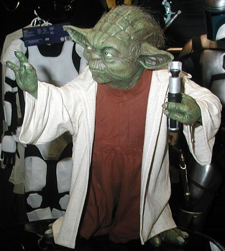
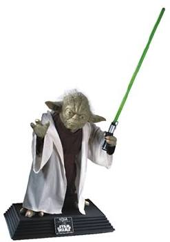

A Jedi uses the force for knowledge and defense, never for attack. But when a Jedi has to defend himself, it's best to do it up right.
That's what I learned after watching Attack of the Clones, and that's what is remarkably demonstrated by our next item for the NYLine eBay auction benefiting the Starlight Starbright Children's Foundation. Ordered and donated for us by our amazing sponsor and friends at Halloween Adventure, this incredible work of art would be the perfect addition to any true Star Wars collection.
You are bidding on a brand new Rubies Supreme Edition Collector's Life Size Yoda Replica.
This is a life size statue of Yoda as seen in Star Wars: Episode II. The ancient, revered Jedi Master stands 2' 4" with a 26" high display base. Yoda is made of latex and polyresin, comes clothed with a hooded Jedi robe and stands with lightsaber in hand. Only 10,000 pieces were produced of this limited edition item. The statue includes an individually numbered plaque with a Star Wars: Episode II - Attack of the Clones logo and Certificate of Authenticity.
Check out our auction page for a continually updated list of all of the items going up for bids, and take a closer look at each product in our gallery! The next auction item will be announced soon, so stay tuned!